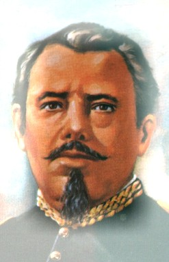

Estos son algunos héroes de la Batalla de Puebla:
Ignacio Zaragoza
Famoso militar mexicano quen cuando las fuerzas francesas de Napoleón III invadieron México para imponer como emperador a Maximiliano de Habsburgo, con el rango de general y al mando del Ejército de Oriente, las enfrentó en Acultzingo en la llamada Batalla de Las Cumbres de Acultzingo, el 28 de abril de 1862, siendo obligado a retroceder. Zaragoza comprendió la posición defensiva y favorable que tenía la ciudad de Puebla, paso obligado para ir a la Ciudad de México, y con un ejército más pequeño y menos equipado que los franceses, logró dar una batalla excepcional desde los cerros de Loreto y Guadalupe el 5 de mayo de 1862, en la que el ejército francés fue completamente derrotado, viéndose obligado a retirarse hasta la ciudad de Orizaba, en el estado de Veracruz. El informe que el general Zaragoza rindió sobre la Batalla de Puebla al Secretario de Guerra Miguel Blanco Múzquiz fue breve y significativo: "Las armas nacionales se han cubierto de gloria. Las tropas francesas se portaron con valor en el combate y su jefe con torpeza".
Miguel Negrete
Durante la Segunda Intervención Francesa en México, Negrete hizo a un lado su ideología conservadora y participó en la defensa del territorio mexicano, ante el avance de las tropas francesas hacia el centro de México, Negrete reacciona y se pone de parte del bando liberal con su célebre frase "Yo tengo Patria antes que Partido".Unido al ejército republicano y a las órdenes del general Ignacio Zaragoza, ambos se cubren de gloria en la Batalla de Las Cumbres y en la Batalla de Puebla el 5 de mayo de 1862, llegando a ser considerado como el segundo héroe de dicha batalla al defender el Fuerte de Loreto.

Porfirio Diaz
El 5 de mayo, el político oaxaqueño y otros militares intervinieron en la Batalla de Puebla, Díaz defendió el ala izquierda de la ciudad, y rebatió en dos ocasiones el ataque francés.
En un principio, retirándose en buen orden, los marinos franceses pronto se vieron huyendo en pánico perseguidos por los Lanceros de Oaxaca. Tan precipitada fue su huida, que muchos galos tuvieron que arrojar sus mochilas para poder correr más aprisa de la caballería mexicana.
Felipe Berriozabal
Como militar llegó a General y fue ministro de Guerra y Marina. Participó en la Guerra de Reforma y contra la Intervención Francesa. En la batalla del 5 de mayo en Puebla, aseguró el triunfo de los mexicanos al dar alcance con la caballería, junto con el Gral. Porfirio Díaz, a las tropas francesas en retiradas.Actuó bajo las órdenes del general Ignacio Zaragoza al confrontar y derrotar a Leonardo Márquez en las Lomas de Calderón, pero fue hecho prisionero por Miguel Miramón en diciembre de 1860. En 1862, participó en la defensa del Convento San Agustín, en la Batalla de Las Cumbres, y en la Batalla de Puebla. En 1863, fue hecho prisionero por los franceses, logró fugarse uniéndose al presidente Benito Juárez, quien lo designó en 1865 como Ministro de la Guerra.
Benito Juarez
El presidente de México, Benito Juárez, fue inteligente y detectó con tiempo el peligro inminente que representaba una posibilidad real de una invasión francesa, reaccionó ordenando el traslado de pertrechos y la fortificación de la ciudad de Puebla, creando una unidad militar, a la que se le nombró: “el ejercito de Oriente”, que originalmente estaba bajo el mando del General López Uraga, pero que fue tan deficiente su desempeño mostrado como líder militar, que Benito Juárez decidió relevarlo y utilizar a su mejor estratega militar (un experto en emboscadas y en guerra de guerrillas) el General Ignacio Zaragoza, quién dejó el ministerio de defensa a su cargo y se dirigió hacía puebla para organizar la oposición al frente bélico que podía representar Francia.
Aplicación seis, JLVM


 1
1 2
2 3
3 4
4 6
6 7
7 8
8